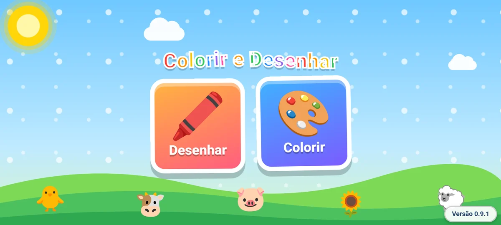
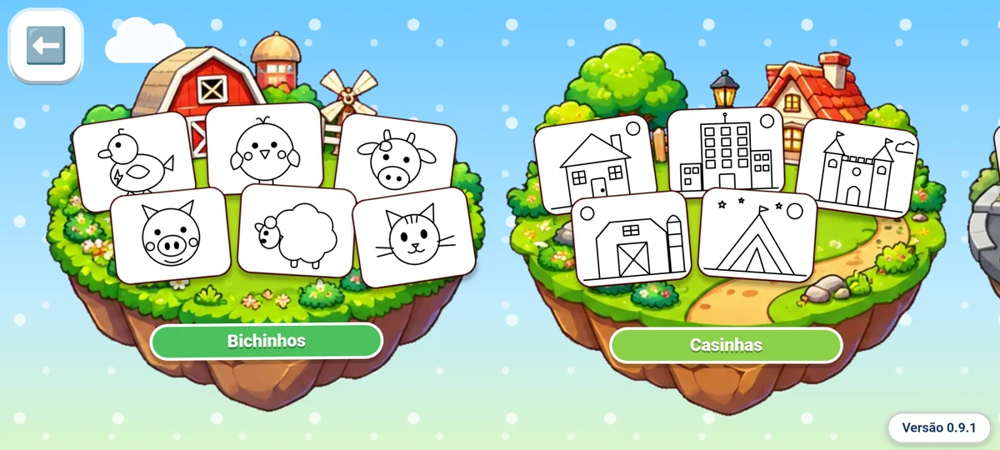
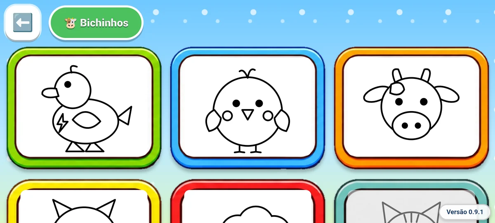
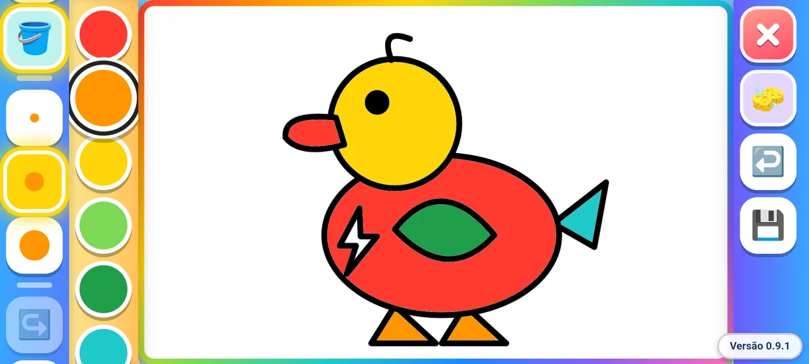
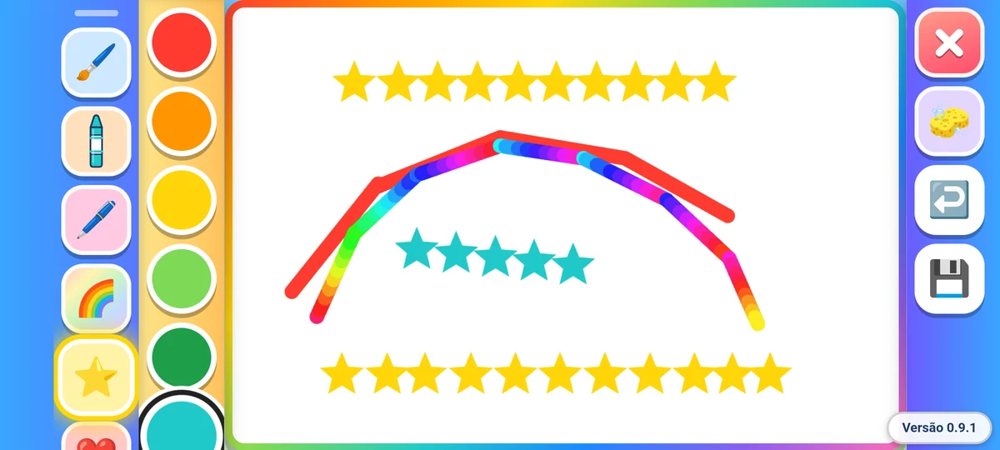
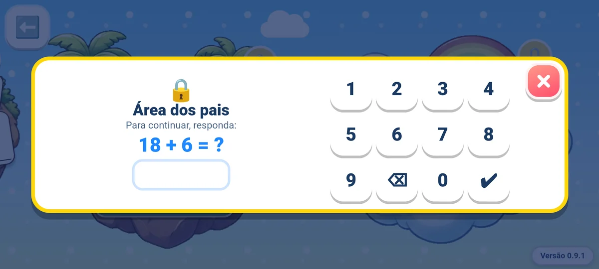

Pintar e brincar com a Maju e a Maitê · versão 0.9.1 (beta)
🔒 Seguro para crianças: sem anúncios, sem login, sem coleta de dados e sem links externos. Tudo fica no aparelho.
🧪 Em teste: o app já está na Google Play em teste interno (só para testadores convidados) e também pode ser experimentado agora, no navegador, pela versão beta.
No celular ou tablet, abra a versão beta e use "Adicionar à tela inicial" para instalar como app de tela cheia. No navegador a compra não funciona (ela acontece só no app da Google Play); para ver tudo liberado, abra a beta com o desbloqueio de teste.
Como ficou o app

Tela inicialDois botões grandes: Desenhar (folha em branco) e Colorir (páginas prontas).

As ilhasCada tema é uma ilha flutuante com os cartões dos desenhos em cima. É só arrastar para o lado e tocar.

Desenhos da ilhaCartões grandes e coloridos. Os desenhos que a criança já pintou aparecem pintados.

PintandoBarra de ferramentas e 24 cores. A tinta fica dentro do espaço onde o dedo começou, sem "borrar" para fora.

Desenho livrePincel, giz, marcador, arco-íris e carimbos de estrela e coração.

Área dos paisAo tocar em algo com cadeado, aparece uma conta simples só para adultos.Desbloquear tudoPagamento único de R$ 29,90 pela Google Play, sem assinatura e sem anúncios.
Como funciona
Um app de desenhar e colorir feito para crianças pequenas (3 a 6 anos): botões grandes só com figuras, nada para ler e sons leves. A criança escolhe uma ilha, toca num desenho, escolhe uma cor e pinta com o dedo. O app fica sempre deitado (nos dois lados), e o desenho preenche a tela de cima a baixo.
🐮 Bichinhos — 11 desenhos
🏠 Casinhas — 5 desenhos
🚗 Automóveis — 5 desenhos
🦖 Dinossauros — 6 desenhos
🌻 Plantas — 7 desenhos
🌈 Céu e Mar — 7 desenhos
Versão grátis e versão completa
Grátis
Completa (R$ 29,90)
Ilhas
2 (Bichinhos e Casinhas)
As 6 ilhas
Desenhos para colorir
5 em cada ilha liberada
Todos os 41
Desenho livre, pincéis, balde, salvar
Sim
Sim
Anúncios
Nenhum
Nenhum
Cobrança
—
Pagamento único, sem assinatura
O desbloqueio é feito pelos pais, na Google Play, atrás de uma pergunta de adulto. O app não cria conta e não guarda dados de pagamento.
O que o app tem
Tinta presa ao espaço: a pintura não passa do contorno de onde o toque começou.
Balde de tinta para pintar um espaço inteiro com um toque.
Pincéis: pincel, giz, marcador, arco-íris e carimbos, em 3 tamanhos e 24 cores. A ferramenta escolhida aparece na ponta do dedo.
Borracha, desfazer, refazer e zoom com dois dedos.
O desenho fica guardado sozinho no aparelho ao sair.
Salvar o desenho como imagem na galeria do aparelho.
Dados técnicos
Android 10 ou mais novo (celular e tablet), sempre na horizontal.
Funciona sem internet. O app não pede nenhuma permissão além da cobrança da Google Play.
Versão atual: 0.9.1 (beta). Na versão web, o selo de versão no canto da tela mostra a versão e permite atualizar.